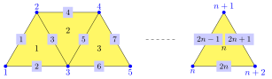
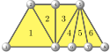
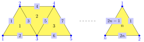
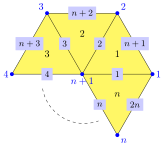
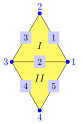
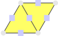

This chapter introduces methods to find all simplicial surfaces with certain restrictions. Section 13.1 includes several constuction methods for simplex rings and strings. In Section 13.2 all simplicial surfaces for a given vertex-faithful simplicial surface are constructed which can be generated by using essential butterfly insertion. Simplicial surfaces which have isomorphic face graphs are computed in Section 13.3 by using different approaches.
This section includes different possibilities to construct simplex string and rings. A simplex string is a simplicial surface that it is connected and it is a single triangle or exactly two of its faces (end faces) have two boundary edges and all other faces have exactly one inner and two outer edges. If all vertices of a simplex string have degree at least three, it is called a simplicial strip or open geodesic. A simplicial surface is a simplex ring if it is connected and each face has exactly one inner and two outer edges. If all vertices of a simplex ring have degree 3, it is called a (closed) geodesic. Note that a simplicial umbrella is a simplex ring with exactly one inner vertex.
‣ SimplexStringByIsomorphismType( isomorphismType ) | ( operation ) |
Returns: a simplicial surface
This method constructs a simplex string given its isomorphism type. Simplex strings can be described uniquely by their isomorphism type which is a list [n_1,...,n_k]. The simplex string with isomorphism type [n_1,...,n_k] has n_1+...+n_k faces and is constructed based on a strip with k faces where the i-th faces is subdivided in n_i faces, as shown in 13.1-3.
As an example consider the simplex string with isomorphism type [1,2,3]:
gap> string:=SimplexStringByIsomorphismType([1,2,3]); simplicial surface (8 vertices, 13 edges, and 6 faces) gap> UmbrellaDescriptorOfSurface(string); [ [ 1 ], [ 1, 2 ], [ 4, 3, 2, 1 ], [ 2, 3 ], [ 3, 4, 5, 6 ], [ 4, 5 ], [ 5, 6 ], [ 6 ] ] gap> IsSimplexString(string); true
‣ SimplicialOpenGeodesic( nrFaces ) | ( operation ) |
‣ SimplicialStrip( nrFaces ) | ( operation ) |
Returns: a simplicial surface
Return a simplicial surface consisting of one non-closed geodesic-path with nrFaces triangles. The labels are assigned according to the following illustration (for n odd), in which n is nrFaces.

gap> geo4 := SimplicialOpenGeodesic(4); simplicial surface (6 vertices, 9 edges, and 4 faces) gap> VerticesOfEdges(geo4); [ [ 1, 2 ], [ 1, 3 ], [ 2, 3 ], [ 2, 4 ], [ 3, 4 ], [ 3, 5 ], [ 4, 5 ], [ 4, 6 ], [ 5, 6 ] ] gap> EdgesOfFaces(geo4); [ [ 1, 2, 3 ], [ 3, 4, 5 ], [ 5, 6, 7 ], [ 7, 8, 9 ] ] gap> VerticesOfFaces(geo4); [ [ 1, 2, 3 ], [ 2, 3, 4 ], [ 3, 4, 5 ], [ 4, 5, 6 ] ] gap> gap> geo5 := SimplicialStrip(5); simplicial surface (7 vertices, 11 edges, and 5 faces) gap> VerticesOfEdges(geo5); [ [ 1, 2 ], [ 1, 3 ], [ 2, 3 ], [ 2, 4 ], [ 3, 4 ], [ 3, 5 ], [ 4, 5 ], [ 4, 6 ], [ 5, 6 ], [ 5, 7 ], [ 6, 7 ] ] gap> EdgesOfFaces(geo5); [ [ 1, 2, 3 ], [ 3, 4, 5 ], [ 5, 6, 7 ], [ 7, 8, 9 ], [ 9, 10, 11 ] ]
‣ SimplexRingByIsomorphismType( isomorphismType ) | ( operation ) |
Returns: a simplicial surface
This method constructs a simplex ring given its isomorphism type. They can be described uniquely by their isomorphism type which is a list [n_1,...,n_k]. The simplex ring with isomorphism type [n_1,...,n_k] has n_1+...+n_k faces and is constructed based on a closed geodesic with k faces where the i-th faces is subdivided in n_i faces. How the subdivision is defined can be seen in the picture below. The incidences between vertices and faces can also be observed there.
As an example consider the simplex ring with isomorphism type [1,2,3], where the left and right edge have to be identified:

gap> ring:=SimplexRingByIsomorphismType([1,2,3]); simplicial surface (6 vertices, 12 edges, and 6 faces) gap> UmbrellaDescriptorOfSurface(ring); [ [ 2, 1, 6 ], [ 1, 2, 3, 4 ], [ 2, 3 ], [ 1, 6, 5, 4, 3 ], [ 4, 5 ], [ 5, 6 ] ] gap> IsClosedSurface(ring); false gap> IsOrientableSurface(ring); false gap> IsSimplexRing(ring); true
‣ SimplicialClosedGeodesic( nrFaces ) | ( operation ) |
‣ SimplicialGeodesic( nrFaces ) | ( operation ) |
Returns: a simplicial surface
Return a simplicial surface consisting of one closed geodesic-path with nrFaces triangles (at least 3 faces are needed). The labels are assigned according to the following illustration (for n odd), in which n is nrFaces.

gap> geo3 := SimplicialClosedGeodesic(3); simplicial surface (3 vertices, 6 edges, and 3 faces) gap> VerticesOfEdges(geo3); [ [ 1, 2 ], [ 1, 3 ], [ 2, 3 ], [ 1, 2 ], [ 1, 3 ], [ 2, 3 ] ] gap> EdgesOfFaces(geo3); [ [ 1, 2, 3 ], [ 3, 4, 5 ], [ 1, 5, 6 ] ] gap> VerticesOfFaces(geo3); [ [ 1, 2, 3 ], [ 1, 2, 3 ], [ 1, 2, 3 ] ] gap> gap> geo6 := SimplicialGeodesic(6); simplicial surface (6 vertices, 12 edges, and 6 faces) gap> VerticesOfEdges(geo6); [ [ 1, 2 ], [ 1, 3 ], [ 2, 3 ], [ 2, 4 ], [ 3, 4 ], [ 3, 5 ], [ 4, 5 ], [ 4, 6 ], [ 5, 6 ], [ 1, 5 ], [ 1, 6 ], [ 2, 6 ] ] gap> EdgesOfFaces(geo6); [ [ 1, 2, 3 ], [ 3, 4, 5 ], [ 5, 6, 7 ], [ 7, 8, 9 ], [ 9, 10, 11 ], [ 1, 11, 12 ] ]
‣ SimplicialUmbrella( nrFaces ) | ( operation ) |
‣ SimplicialGon( nrFaces ) | ( operation ) |
Returns: a simplicial surface
Returns a simplex ring with nrFaces and exactly one inner vertex. The labels are assigned according to the following illustration, in which n is nrFaces:

gap> umb4 := SimplicialUmbrella(4); simplicial surface (5 vertices, 8 edges, and 4 faces) gap> VerticesOfEdges(umb4); [ [ 1, 5 ], [ 2, 5 ], [ 3, 5 ], [ 4, 5 ], [ 1, 2 ], [ 2, 3 ], [ 3, 4 ], [ 1, 4 ] ] gap> EdgesOfFaces(umb4); [ [ 1, 2, 5 ], [ 2, 3, 6 ], [ 3, 4, 7 ], [ 1, 4, 8 ] ] gap> VerticesOfFaces(umb4); [ [ 1, 2, 5 ], [ 2, 3, 5 ], [ 3, 4, 5 ], [ 1, 4, 5 ] ] gap> umb2 := SimplicialUmbrella(2); simplicial surface (3 vertices, 4 edges, and 2 faces) gap> VerticesOfEdges(umb2); [ [ 1, 3 ], [ 2, 3 ], [ 1, 2 ], [ 1, 2 ] ] gap> EdgesOfFaces(umb2); [ [ 1, 2, 3 ], [ 1, 2, 4 ] ]
This section contains a method to compute for a given vertex-faithful simplicial surface all simplicial surfaces that can be constructed by essential butterfly insertions.
‣ AllSimplicialSurfacesByEssentialButterflyInsertion( surface ) | ( operation ) |
Returns: a list of simplicial surfaces
This function computes representatives of the isomorphism classes of all simplicial surfaces that can be obtained from the input surface surf by an essential butterfly insertion. Note that the input surface surf has to be vertex-faithful. An essential butterfly insertion is a butterfly insertion that does not create a 3-waist.
gap> surface := SimplicialSurfaceByDownwardIncidence( > [ [ 1, 3 ], [ 1, 2 ], [ 2, 3 ], [ 3, 4 ], [ 1, 4 ], [ 1, 5 ], [ 1, 6 ], > [ 2, 6 ], [ 2, 7 ], [ 3, 7 ], [ 3, 8 ], [ 4, 8 ], [ 4, 5 ], [ 5, 6 ], > [ 6, 7 ], [ 7, 8 ], [ 5, 8 ] ], > [ [1, 2, 3], [1, 4, 5], [6, 7, 14], [2, 7, 8], [8, 9, 15], > [3, 9, 10], [10, 11, 16], [4, 11, 12], [12, 13, 17], [5, 6, 13] ]); simplicial surface (8 vertices, 17 edges, and 10 faces) gap> IsConnectedSurface(surface); true gap> EulerCharacteristic(surface); 1 gap> AllSimplicialSurfacesByEssentialButterflyInsertion(surface); [ simplicial surface (9 vertices, 20 edges, and 12 faces), simplicial surface (9 vertices, 20 edges, and 12 faces) , simplicial surface (9 vertices, 20 edges, and 12 faces), simplicial surface (9 vertices, 20 edges, and 12 faces) ]
‣ NewGraphsForEdgeInsertion( D[, allowTriangleInsertion] ) | ( operation ) |
‣ NewGraphsForEdgeInsertionNC( D[, allowTriangleInsertion] ) | ( operation ) |
Returns: a list of digraphs
Computes all graphs that can be constructed from D using edge insertion. If the parameter allowTriangleInsertion is true, insertions between edges that have one vertex in common are allowed; otherwise, they are not. The default value of allowTriangleInsertion is true and NewGraphsForEdgeInsertion ensures that the returned digraph is symmetric, even when the input digraph D is not symmetric. NewGraphsForEdgeInsertionNC performs no checks on the input.
gap> D := DigraphByEdges([[1,2], [3,4], [1,3], [2,4]]); <immutable digraph with 4 vertices, 4 edges> gap> NewGraphsForEdgeInsertion(D, true); [ <immutable digraph with 6 vertices, 14 edges>, <immutable digraph with 6 vertices, 14 edges> ] gap> NewGraphsForEdgeInsertion(D, false); [ <immutable digraph with 6 vertices, 14 edges> ]
This section contains method to compute edge-face equivalent simplicial surfaces. Two simplicial surfaces are called edge-face equivalent if their face-graphs are isomorphic.
‣ AllSimplicialSurfacesOfDigraph( digraph[, vertexfaithful] ) | ( operation ) |
‣ AllSimplicialSurfacesByFacesOfEdges( surface[, vertexfaithful] ) | ( operation ) |
Returns: a list
Return all (vertex-faithful) simplicial surfaces, that have digraph as face graph or are edge-face equivalent to surface. Note that digraph has to be cubic, connected, symmetric and simple and surface has to be a closed surface. The parameter vertexfaithful indicates whether only vertex-faithful simplicial surfaces are searched, where the default value is false. The vertices of a simplicial surface can be identified with certain cycles in the face graph. This method searches possible combinations of cycles, with the cycles corresponding to the vertices of a simplicial surface.
For example, consider the complete graph on four nodes:
gap> digraph:=CompleteDigraph(4);; gap> tet1 := AllSimplicialSurfacesOfDigraph(digraph,true); [ simplicial surface (4 vertices, 6 edges, and 4 faces) ] gap> IsIsomorphic(tet1[1],Tetrahedron()); true
So the only vertex-faithful simplicial surface of the digraph is the tetrahedron. But there is another simplicial surface, which is not vertex-faithful:
gap> list := AllSimplicialSurfacesOfDigraph(digraph,false); [ simplicial surface (4 vertices, 6 edges, and 4 faces), simplicial surface (3 vertices, 6 edges, and 4 faces)] gap> tet2 := Filtered(list,IsVertexFaithful); [ simplicial surface (4 vertices, 6 edges, and 4 faces) ] gap> IsIsomorphic(tet2[1],Tetrahedron()); true gap> AllSimplicialSurfacesByFacesOfEdges (Tetrahedron()); [ simplicial surface (4 vertices, 6 edges, and 4 faces), simplicial surface (3 vertices, 6 edges, and 4 faces) ]
Since it takes a long time to compute all cycles, you should only call the method for digraphs with twelve or less nodes for vertexfaithful equal to false. For vertexfaithful equal to true, the method needs to consider only chordless and non-separating cycles. This makes the method fast for digraphs up to 28 nodes. In general, it is much faster to only compute the vertex-faithful simplicial surfaces.
‣ ReembeddingsOfDigraph( digraph, g, oriented ) | ( operation ) |
‣ ReembeddingsOfSimplicialSphere( surf, g, oriented ) | ( operation ) |
Returns: a list
The method ReembeddingsOfSimplicialSphere computes all edge-face equivalent simplicial surfaces of the given vertex-faithful simplicial sphere surf with the given genus g if these simplicial surfaces are orientable or not is given by oriented. Note that two simplicial surfaces are edge-face equivalent if the corresponding face graphs are isomorphic (see 15.4-2 for a definition of the face graph). The method ReembeddingsOfDigraph computes for a 3-connected cubic planar graph all simplicial surfaces with the given genus g and if these simplicial surfaces are orientable or not is given by oriented that have digraph as their face graph. We call this a re-embedding of a digraph or a simplicial sphere. If surf is not a vertex-faithful simplicial sphere or digraph is not planar and cubic, an error is printed. It is not checked whether digraph is a 3-connected graph.
Note that, non-orientable surfaces of genus one are projective planes, orientable surfaces of genus one are tori and non-orientable surfaces of genus two are Klein bottles. This algorithm is based on [Ena19] and [WN24].
For example, consider the complete graph on four vertices:
gap> digraph:=CompleteDigraph(4);; gap> ReembeddingsOfDigraph(digraph,1,false); [ simplicial surface (3 vertices, 6 edges, and 4 faces) ] gap> ReembeddingsOfDigraph(digraph,1,true); [ ] gap> ReembeddingsOfDigraph(digraph,2,false); [ ]
So the complete graph on four vertices has exactly one re-embedding on a projective plane but no re-embedding on the torus or the Klein bottle. Note that the complete graph on four vertices is the face graph of the tetrahedron. The octahedron has for example no edge-face equivalent projective plane but three edge-face equivalent tori and two edge-face equivalent Klein bottles.
gap> oct:=Octahedron();; gap> ReembeddingsOfSimplicialSphere(Octahedron(),1,false); [ ] gap> ReembeddingsOfSimplicialSphere(Octahedron(),1,true); [ simplicial surface (4 vertices, 12 edges, and 8 faces), simplicial surface (4 vertices, 12 edges, and 8 faces), simplicial surface (4 vertices, 12 edges, and 8 faces) ] gap> ReembeddingsOfSimplicialSphere(Octahedron(),2,false); [ simplicial surface (4 vertices, 12 edges, and 8 faces), simplicial surface (4 vertices, 12 edges, and 8 faces) ]
This section contains all other pre-defined surfaces that are not covered in one of the other sections.
‣ OneFace( ) | ( operation ) |
Returns: a simplicial surface
Return a one-face as a simplicial surface. A one-face consists of one triangular face.
‣ Butterfly( ) | ( operation ) |
Returns: a simplicial surface
Return a butterfly as a simplicial surface. A butterfly consists of two triangular faces that share an edge.

‣ JanusHead( ) | ( operation ) |
Returns: a simplicial surface
Return a Janus-Head as a simplicial surface. A Janus-Head consists of two triangular faces that share three edges.
gap> janus := JanusHead();;

‣ SimplicialDoubleUmbrella( nrFaces ) | ( operation ) |
‣ SimplicialDoubleGon( nrFaces ) | ( operation ) |
Returns: a simplicial surface
Return a simplicial surface consisting of two closed umbrella-paths with nrFaces triangles which are joined at their boundary. The labels of one umbrella are assigned according to the illustration for SimplicialUmbrella, the additional vertex is labelled with nrFaces+2, the incident edges to this vertex are labelled from 2*nrFaces+1 to 4*nrFaces and the incident faces are labelled from nrFaces+1 to 2*nrFaces.
gap> doubleumb2:=SimplicialDoubleUmbrella(2); simplicial surface (4 vertices, 6 edges, and 4 faces) gap> VerticesOfEdges(doubleumb2); [ [ 1, 3 ], [ 2, 3 ], [ 1, 2 ], [ 1, 2 ], [ 1, 4 ], [ 2, 4 ] ] gap> EdgesOfFaces(doubleumb2); [ [ 1, 2, 3 ], [ 1, 2, 4 ], [ 3, 5, 6 ], [ 4, 5, 6 ] ] gap> doubleumb4:=SimplicialDoubleUmbrella(4); simplicial surface (6 vertices, 12 edges, and 8 faces) gap> IsIsomorphic(doubleumb4,Octahedron()); true
generated by GAPDoc2HTML